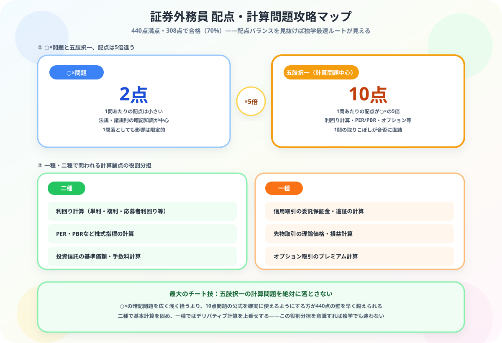

証券外務員一種・二種の独学合格ガイド【2026年版】
大谷 一輝 より
こんにちは、大谷です！
証券会社や銀行への内定・就活のために外務員のテキストを開いた瞬間……「うわっ、なんじゃこりゃ、利回り計算やデリバティブの数式、法規の暗記が多すぎて頭パンクするわ！」とフリーズしていませんか？（笑）
毎日会計や財務を猛勉強している僕の視点から、308点以上の合格ラインをゲーム感覚でサクッと最速クリアし、履歴書で無双するための【計算問題ハック・独学逆算スケジュール】を優しくナビゲートします！
また、記事の末尾のほうにある【いいねボタン】をポチッと押してもらえると、めちゃくちゃ嬉しいです！
この記事でわかること（5秒まとめ）
- 二種は現物取引のみ、一種は信用取引・デリバティブも扱える
- 合格率は60〜70%、合格基準は308点以上/440点（70%）
- 五肢択一の計算問題は1問10点と高配点——ここを落とさないことが最重要
- 金融機関に登録しないと「外務員」として業務はできない
受験生
内定先から「入社までに外務員を取っておいて」と言われたんですが、法規の暗記量が多すぎて心が折れそうです……とりあえず全部丸暗記するしかないですよね？
大谷（簿記1級勉強中）
丸暗記だけで挑むのはもったいないです！この試験は「○×問題」が1問2点なのに対して、「五肢択一の計算問題（利回り・PER・オプション等）」は1問10点という超・高配点。つまりこの計算問題を絶対に落とさないことが最大のチート技なんです。法規の暗記も大事ですが、配点バランスを意識したゲームだと捉え直すと、やるべき優先順位が一気にクリアになりますよ！
一種・二種の違い
| 項目 | 二種外務員 | 一種外務員 |
|---|---|---|
| 扱える商品 | 現物取引（株式・債券・投信等） | 二種＋信用取引・デリバティブ |
| 合格率 | 60〜70% | 60〜70% |
| 勉強時間 | 50〜100時間 | 100〜150時間 |
| 受験費用 | 10,323円 | 10,323円 |
| 試験形式 | CBT（随時） | CBT（随時） |
| 合格基準 | 308点以上/440点（70%） | 308点以上/440点（70%） |
取得順序：通常は二種を先に取得してから一種に挑戦します。証券会社・銀行に入社後、会社負担で受験させてもらえるケースも多いです。就活前に自主的に取得していると高評価につながります。
試験科目と攻略法

法規・諸規則（コンプライアンス）
金融商品取引法・証券業協会の規則が中心。違反行為・禁止事項の判断問題が多い。過去問で出題パターンを把握することが最短攻略法です。
商品業務（商品知識）
株式・債券・投資信託・デリバティブの仕組みと計算。利回り計算・PER・PBRなどの公式を確実に使えるようにすることが重要。一種では先物・オプションの計算が加わります。
関連科目（経済・財務）
マクロ経済・財務諸表の読み方が中心。FPや簿記の知識があると有利です。
1〜2ヶ月の独学スケジュール（一種）
| 期間 | 内容 |
|---|---|
| 1〜2週目 | 公式テキスト通読・全体像の把握 |
| 3〜4週目 | 計算問題の徹底練習（利回り・デリバティブ） |
| 5〜6週目 | 過去問演習・法規コンプライアンスの確認 |
| 7〜8週目 | 模擬試験・弱点補強 |
注意：証券外務員資格は日本証券業協会に登録した「証券会社・銀行等の会員」でないと登録できません。資格試験に合格しても、金融機関に勤務していない場合は「外務員」として登録・業務ができません。
金融業界でのキャリアパス
- 証券会社（野村・大和・SBI等）への就職で必須
- 銀行の投資信託・保険販売窓口でも必要
- IFA（独立系ファイナンシャルアドバイザー）として独立する場合も必要
- FP2級・CFPとの組み合わせで金融のプロとしての信頼性が高まる
受験生がよく引っかかる3つの落とし穴
- 法規・諸規則の暗記だけに時間を使い、計算問題の練習が後回しになる：法規は暗記量が多く手を付けやすい反面、配点は1問2点です。1問10点の計算問題（利回り・PER・デリバティブ）を先に固める方が、同じ勉強時間でも得点効率が圧倒的に高くなります。
- 合格しただけで「外務員」として業務できると思い込んでしまう：試験合格はゴールではなく通過点です。日本証券業協会に登録した金融機関に所属していなければ、外務員として実際の営業活動はできません。内定前の自主取得の場合は、この位置づけを理解しておいてください。
- 一種と二種の違いを理解せず、必要のない範囲まで手を広げてしまう：配属先が現物取引中心の部署であれば二種で十分な場合もあります。会社から求められている資格の範囲を確認せずに、闇雲に一種から挑戦して時間を浪費するのは避けましょう。
まとめ
- 金融業界への就職・転職で必須に近い資格
- 合格率60〜70%・勉強時間100〜150時間（一種）
- 計算問題（利回り・デリバティブ）の練習が合格の鍵
- CBT方式で随時受験可能・スケジュール調整しやすい
💹
金融のプロを目指して頑張るあなたを、心から応援しています
就活や内定後の課題として外務員資格に向き合うのは、簡単なことではありません。でも配点バランスを見抜いて計算問題を確実に取れば、独学でも十分クリアできる試験です。この記事が「あ、そういうことか！」につながったら、僕の執筆のモチベーション維持のために、この下にある【いいねボタン】をポチッと押してもらえると、めちゃくちゃ嬉しいです！
Study Questで今日の学習時間を記録して、履歴書で無双する日まで一緒に走り抜きましょう。
よくある質問（FAQ）
証券外務員は独学で合格できますか？
はい、独学で合格できます。合格率は60〜70%と比較的高く、公式テキストと過去問の反復で対応可能です。計算問題が多いため、公式の理解と練習が合否を分けます。
一種と二種の違いは何ですか？
二種は現物取引（株式・債券等）のみ扱えます。一種は二種の業務に加えて信用取引・デリバティブ取引も扱えます。まず二種を取得してから一種に挑戦するルートが一般的です。
証券外務員の勉強時間はどのくらいですか？
二種で50〜100時間、一種で100〜150時間が目安です。金融・経済の基礎知識がある方はさらに短期間での合格も可能です。